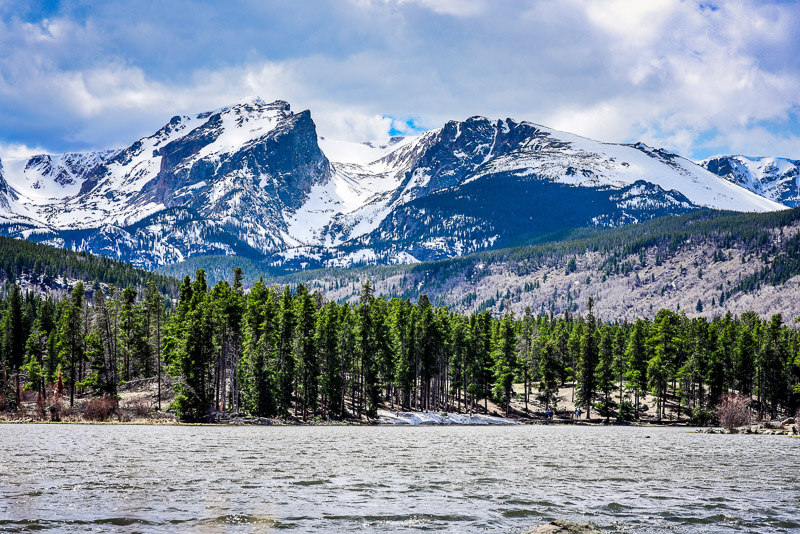

Colorado, USA

Bear Lake is a scenic trailhead and destination in Rocky Mountain National Park. The Bear Lake Road is open year-round,
though it may temporarily close due to adverse weather conditions. An ample parking lot is provided close to the lake.
The Bear Lake Road is approximately 10 miles long and starts close to the Beaver Meadows Entrance station of the Rocky
Mountains National Park.
Google map
Due to snow weather in Rocky Mountain, the road was closes for safety issue. Visitors could check forecast before running up to Rocky
Mountain National Park. However, snowy mountain can play impressive scenario with not too cold too endure, 5 degree celcius. Visitors who
love in landscaping photo can't be missed it.

Explore Colorado Springs' paradise in one magical stop. Garden of the Gods Park is a registered National Natural Landmark.The Garden of
the Gods' red rock formations, the National Park's iconic, were created during a geological upheaval along a natural fault line millions
of years ago, which specific rock's pattern and composition. It take approximately 2 hours from Colorado spring by car.
Google map
Great Sand Dunes National Park and Preserve is in southern Colorado. It’s known for huge dunes like the towering Star Dune, and for
the seasonal Medano Creek and beach created at the base of the dunes. Open all day and night year round, the tallest dunes in North
America are the centerpiece in a diverse landscape of grasslands, wetlands, conifer and aspen forests, alpine lakes, and tundra.
Google map
Denver, the capital of Colorado, is an American metropolis dating to the Old West era. Larimer Square, the city’s oldest
block, features landmark 19th-century buildings. Denver is also a jumping-off point for ski resorts in the nearby Rocky Mountains.
Please be careful with Colorado WEATHER!!!
Google map
Rocky Mountain Arsenal National Wildlife Refuge located adjacent to Commerce City, Colorado, in the United States. It is approximately
8 miles (13 km) northeast of downtown Denver with open lakes, wetlands, prairie grasslands & woodlands home to more than 330 species.
Visitors who are looking for wildlife without travel so far from Denver, this park is suggested.
Google map